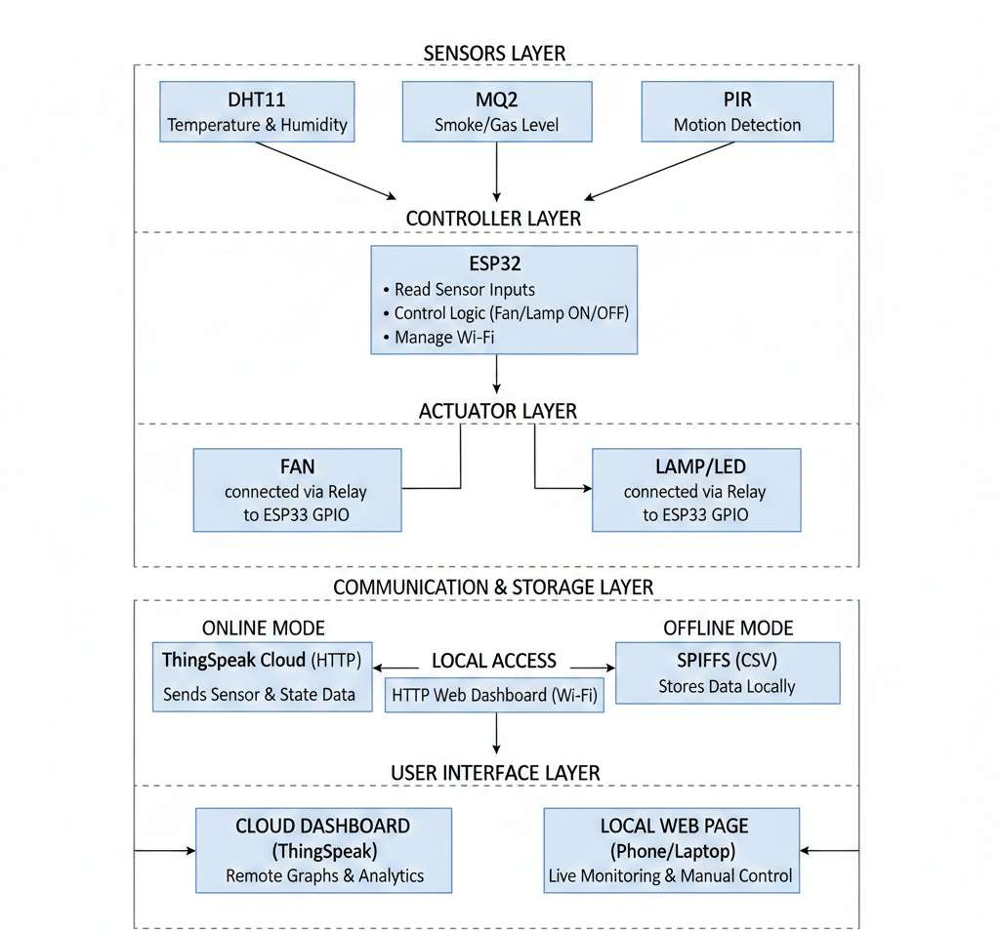
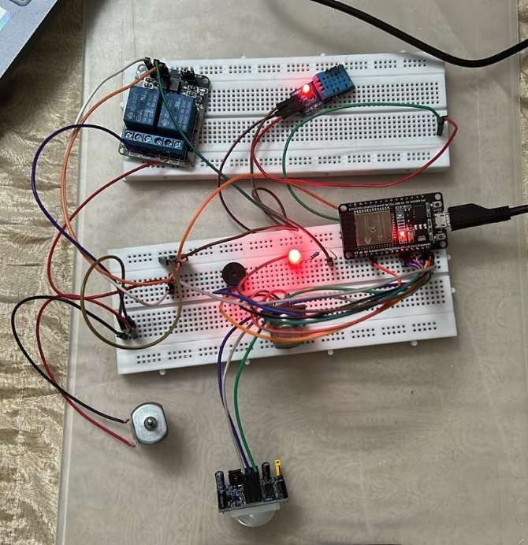
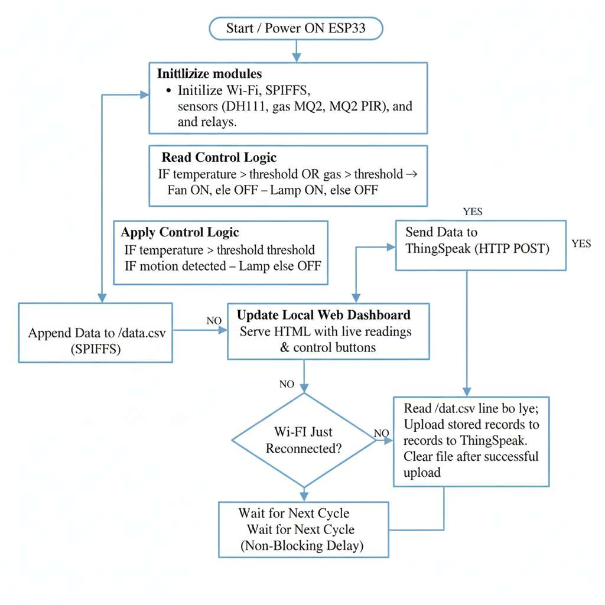
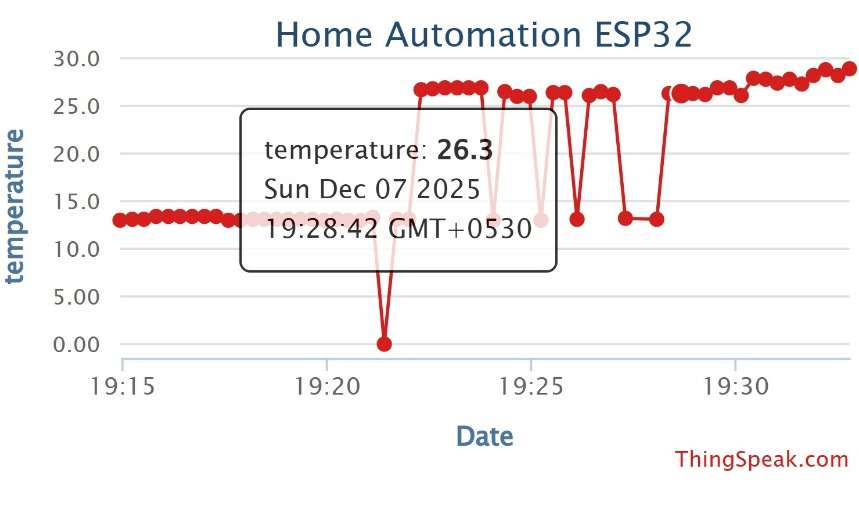
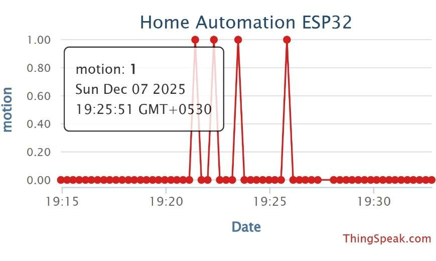
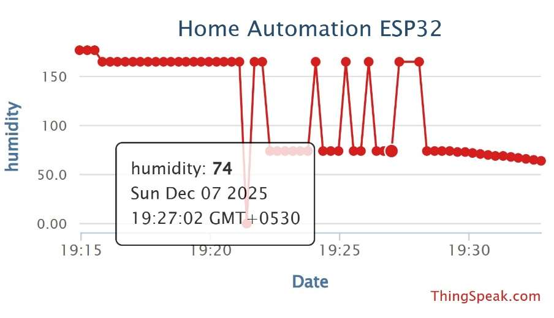
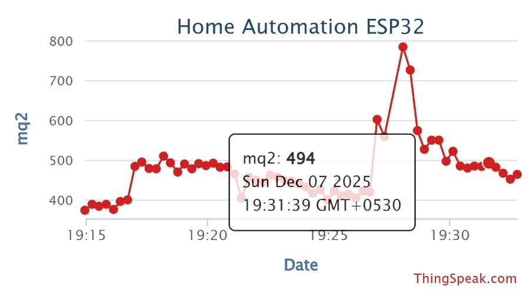
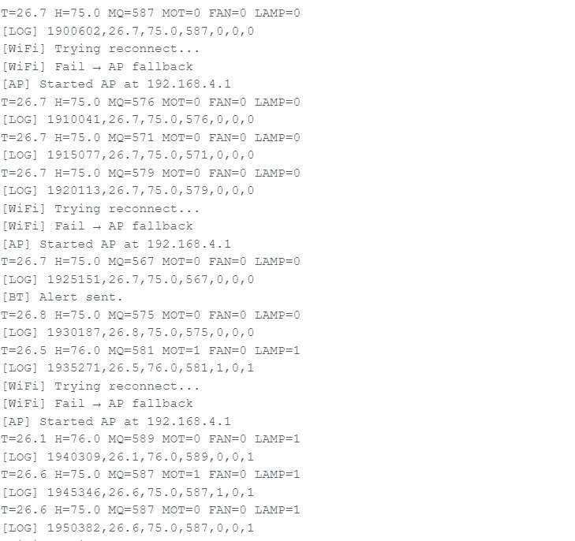
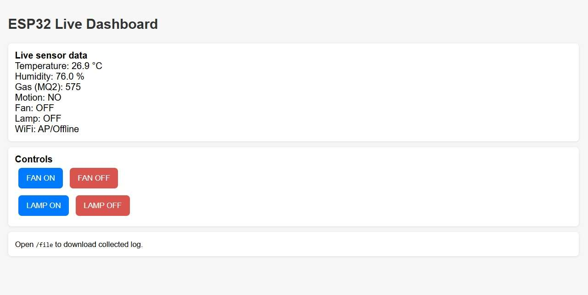
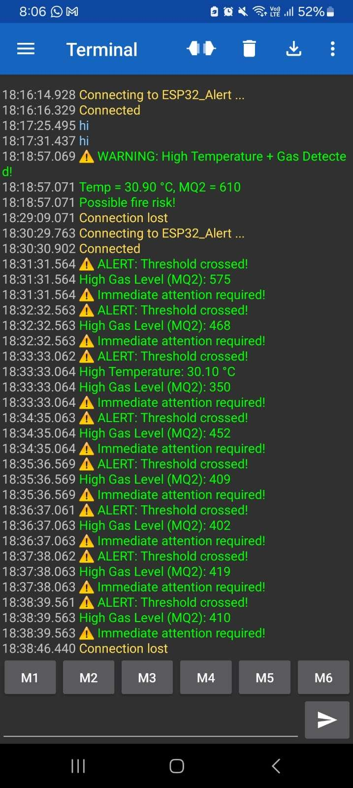

Temperature + Humidity
Provides temperature and humidity measurements to the ESP32.
ESP32 · IoT · SMART AUTOMATION · EDGE SYSTEMS
An ESP32-based environmental monitoring and control system that combines multi-sensor sensing, automatic actuation, ThingSpeak cloud monitoring, SPIFFS-based offline storage and a local web dashboard.
01 / SYSTEM
ARCHITECTURE
The ESP32 acts as the central controller, receiving environmental measurements, applying local control rules, driving the actuators, and managing both cloud and offline data paths.

02 / HARDWARE
SENSING + ACTUATION
Provides temperature and humidity measurements to the ESP32.
Measures the analog smoke and gas level used for ventilation decisions.
Detects human movement for occupancy-based lighting.
Allows the ESP32 to control the fan and lamp through GPIO-connected relays.

03 / LOGIC
LOCAL DECISION MAKING
Sensor readings are processed locally before the system decides whether the fan or lamp should be activated.
Temperature above 30°C turns the fan ON.
MQ2 value above 250 turns the fan ON for ventilation.
Motion detected by PIR turns the lamp ON.
When movement is absent, the lamp turns OFF after the defined interval.

04 / CONNECTIVITY
ONLINE + OFFLINE
During normal operation, readings and actuator states are sent to
ThingSpeak using HTTP. When Wi-Fi is unavailable, timestamped records
are appended to /data.csv in SPIFFS. After reconnection,
the buffered records are uploaded and the local file is cleared.
Remote visualization, historical logging and analytics.
Local timestamped CSV storage preserves data during connectivity loss.
Live readings and manual fan/lamp control over the local network.
05 / CLOUD RESULTS
THINGSPEAK
Temperature, humidity, gas, motion, fan state and lamp state were mapped to ThingSpeak fields and uploaded at regular intervals. The project report records successful cloud updates and visualization.





06 / RESILIENCE
OFFLINE OPERATION
The system does not simply stop. It switches to local operation, keeps recording data and preserves access through the ESP32.

Wi-Fi failure is detected automatically.
Sensor readings continue to be collected.
Records are stored locally in SPIFFS as CSV.
After reconnection, stored data is uploaded to ThingSpeak.
07 / USER INTERFACE
LOCAL DASHBOARD
The ESP32 hosts a browser-based dashboard with live sensor values, fan and lamp controls, a file download link and automatic refresh. The report documents operation in both Station mode and Access Point mode.


08 / OUTCOME
PROJECT SUMMARY
The implementation combines real-time environmental sensing, automatic actuation, cloud monitoring, persistent offline storage and local dashboard access in a single ESP32 platform.